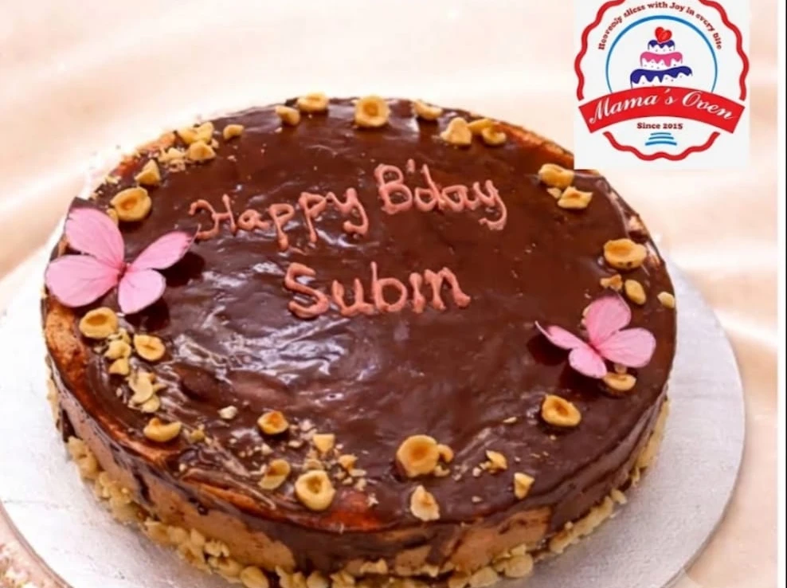

There’s a little love in every layer.The Heart of Mama’s Oven
Homemade warmth,
by the slice.
We believe a good bake belongs at every kind of table: a quiet tea break, a family gathering, or a birthday full of wishes. Mama’s Oven brings honest artisan baking, thoughtful ingredients, and heartfelt care together.
Whether you're looking for a rich Chocolate Truffle, a wholesome Ragi Jaggery cake without refined sugar, or crusty artisan sourdough, every bake is made to order with zero shortcuts.
100% Homemade
Small batches baked fresh with real butter, fruits & flour.
Wholesome Options
Refined sugar-free, jaggery, ragi, and vegan choices.
Personal Care
Custom decorations and personalized messages.
Pickup & Delivery:
Tue – Sun: 9:30 AM – 8:00 PM · Ask on WhatsApp about your area and requested delivery date.